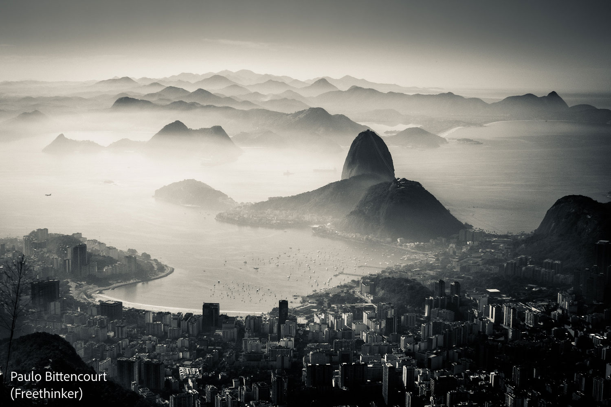
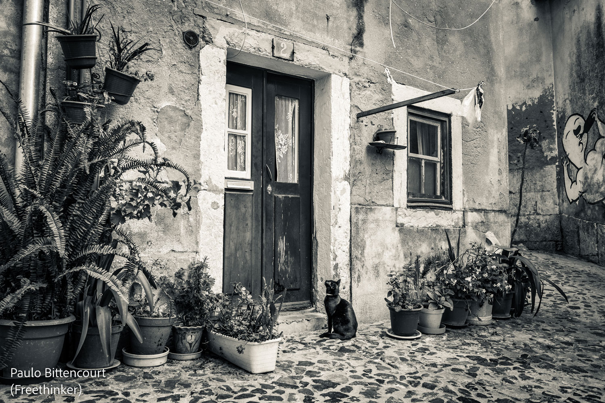
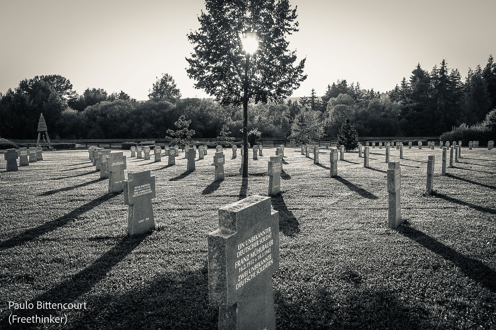
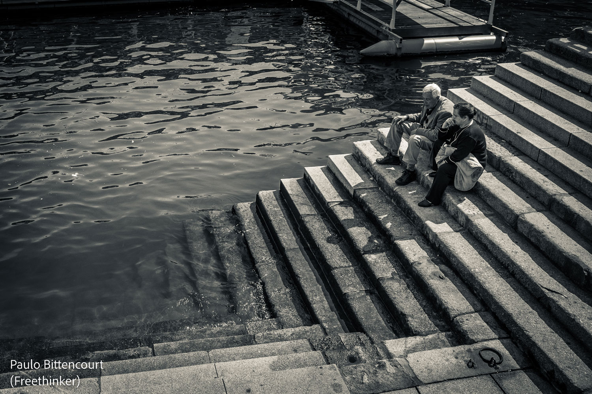
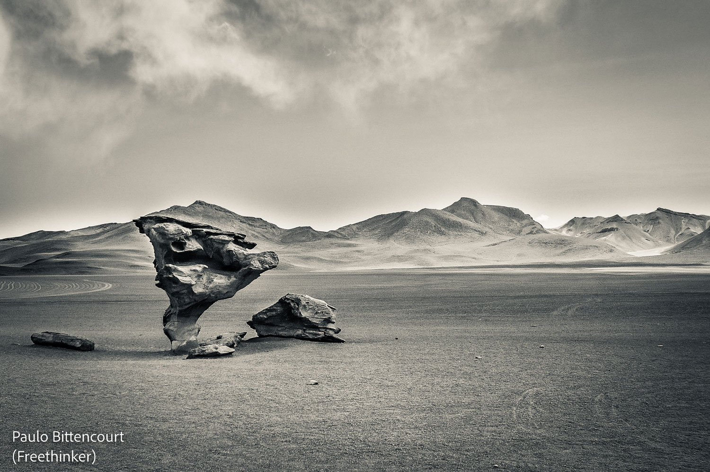

Paulo Bittencourt’s Photographs
After music, my greatest passion is photography. I started taking photos when I was 13 years old. In the afternoons, I worked as an office boy at my hometown’s newspaper. I was responsible also for taking and developing the photos published in it. When the then governor of the State of Paraná, Ney Braga, visited Castro, I took a picture of him. Impressed, he approached me, shook my hand and asked how old I was.
This is a selection of 5 of my photographs. Click on them to see more.
Rio de Janeiro, Brazil
Lisbon, Portugal
Tatra, Slovakia
Porto, Portugal
Atacama, Bolivia